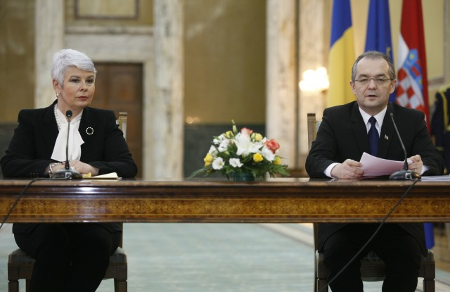

 Emil Boc: Doamnă prim-ministru, doamnelor și domnilor, vom avea o scurtă conferință de presă, în urma întâlnirii pe care am avut-o astăzi, la București, cu premierul Croației, cu delegația care însoțește echipa doamnei prim-ministru. În primul rând, aș vrea să subliniez faptul că am avut o discuție extrem de pragmatică, directă și eficientă. Am discutat atât aspecte care vizează relația noastră bilaterală, cât și aspecte care țin de parcursul european al aderării Croației la Uniunea Europeană. În contextul aniversării, anul acesta, a 20 de ani de la declararea independenței Croației, adresez felicitări poporului croat și, de asemenea, felicitări doamnei prim-ministru pentru eforturile pe care le-a făcut, astfel încât Croația, astăzi, să fie o țară membră NATO și, sunt convins, foarte curând, țară membră a Uniunii Europene. Ne bucură cu atât mai mult acest lucru, cu cât invitația de aderarea la NATO s-a adresat în cadrul summit-ului de la București, iar în acest an, când se marchează 20 ani de la independența Croației, se va realiza îndeplinirea unui obiectiv extrem de important, care înseamnă aderarea la Uniunea Europeană.
În privința relațiilor bilaterale, cel mai important lucru este acela că această cooperare pe care o avem, la nivel bilateral, nu este afectată, nu este grevată de nicio problemă. Cu alte cuvinte, avem o relație foarte bună, iar prin documentele pe care le-am semnat astăzi vom da un impuls suplimentar cooperării economice, culturale dintre țările noastre. Vreau să menționez faptul că, de exemplu, Dacia Duster a fost aleasă autoturismul anului 2011 în Croația. Iată un punct important de plecare pentru continuarea unei colaborări economice benefice.
Sunt convins că și în alte domenii putem, pe baza discuțiilor de astăzi, intensifica schimburile comerciale și relațiile noastre economice. Am abordat și un subiect extrem de important și de mare interes pentru România și anume, comunitate de istroromâni, care trăiește în câteva localități din peninsula Istria din Croația. Dialectul istroromân este unul dintre cele patru dialecte ale limbii române și am adresat o solicitare de sprijin pentru păstrarea și conservarea acestui dialect, întrucât istroromâna figurează în cartea roșie UNESCO a limbilor pe cale de dispariție. De aceea un sprijin din partea autorităților croate pentru conservarea acestui bun cultural comun este și va fi extrem de apreciat de către România.
În privința aderării la Uniunea Europeană, poziția României este foarte clară: România susține politica ușilor deschise în ceea ce privește aderarea la Uniunea Europeană. Croația este cel mai avansat stat din această regiune în procesul de integrare europeană. România sprijină ferm aderarea Croației la Uniunea Europeană. Ne dorim o vecinătate stabilă și prosperă, iar aceste deziderate se pot realiza numai prin integrarea Balcanilor de Vest în structurile europene și euro-atlantice. Croația poate conta în continuare pe sprijinul României în procesul de aderare la Uniunea Europeană. Suntem de asemenea dispuși, așa cum am făcut-o și astăzi, să împărtășim experiența comună atât în ceea ce privește procesul de pre-aderare cât și în privința aspectelor de post aderare la Uniunea Europeană.
Am discutat și despre strategia Dunării și despre modul în care putem face din această strategie, o strategie pragmatică, eficientă, cu un conținut de proiecte care să ajute regiunea și țările noastre.
În încheiere o felicit pe doamna prim-ministru pentru eforturile pe care le face în această perioadă, atât pentru a depăși situația economică dificilă care cu toții ne confruntăm, cât și pentru efortul susținut de aderare a Croației la Uniunea Europeană și pot să o asigur că este un efort care va primi răsplata necesară, pentru că istoria va consemna că premierul Kosor a integrat Croația în Uniunea Europeană. Pentru acest obiectiv, orice efort merită să fie făcut și este pe deplin răsplătit.
Jadranka Kosor: Vă mulțumesc foarte mult, domnule prim-ministru, pentru că, realmente, ne simțim foarte bine în țara dumneavoastră, ne simțim într-o atmosferă extrem de prietenească și, într-adevăr, în acest moment simțim nevoia sprijinului dumneavoastră pentru intrarea Croației în Uniunea Europeană. Rugăm sprijinul României, al domnului prim-ministru, având în vedere că dorința Croației este de a finaliza negocierile de intrare în Uniunea Europeană până la încheierea mandatului președinției ungare a Consiliului UE, la sfârșitul lunii iunie. Am lucrat intens pentru a asigura acest lucru. Este foarte important, sprijinul pe care îl acordă partea română, în acest moment al negocierilor pe care Croația le poartă cu Uniunea Europeană, sprijin pe care l-am putut constata și în discuțiile pe care le-am avut azi dimineață cu președintele României, Traian Băsescu.
Apreciem extrem de mult sprijinul României în această acțiune a Croației. În urmă cu trei ani, Croația – așa cum s-a menționat aici – a primit invitația de a deveni membră a NATO și considerăm, de asemenea, că va fi un moment important și intrarea Croației în Uniunea Europeană. Este foarte important sprijinul României în această direcție. Mulțumim, de asemenea, pentru sprijinul consecvent pe care partea română l-a acordat Croației. În acest sens sunt de importanță documentele semnate astăzi, cum ați văzut, cel în plan economic, între ministerele economiei ale celor două țări, și cel între ministerele afacerilor externe.
Ceea ce este foarte important și mă bucur că suntem împreună de acord în acest sens este faptul că există un potențial economic extraordinar, un potențial de colaborare între cele două state. Eu în aceste discuții pe care le-am purtat, am amintit și de o firmă extrem de importantă, este vorba despre firma Končar care a efectuat modernizarea a trei locomotive pentru Căile Ferate Române. În același timp, evident că am menționat și faptul că există un potențial extraordinar de colaborare în ceea ce privește porturile noastre. Pe de o parte, am amintit porturile adriatice, de asemenea, amintesc porturile dunărene din România, și sper că aceste lucruri vor primi un contur cu ocazia unei întruniri care va avea loc la finele lunii aprilie, în portul Vukovar. Evident că este de o însemnătate majoră și faptul că, în calitate de membre NATO, pe de o parte, și în perspectiva devenirii țării noastre membre a Uniunii Europene, este importantă siguranța în aceste zone, siguranță care oferă evident și posibilitatea dezvoltării economice.
În încheierea negocierilor și intrarea în Uniunea Europeană este un garant din partea Croației pentru celelalte țări, pentru țările vecine, pentru ca și ele să fie încurajate în procesul acesta de aderare. Este un mesaj de speranță și încurajare, un mesaj prin care subliniem că aceste eforturi vor fi încununate cu succes. Suntem, evident, în această cale euro-atlantică pentru o stabilitate durabilă în această parte a Europei, în această parte a lumii. Pe parcursul discuțiilor noastre am afirmat și am subliniat interesul comun în vederea asigurării siguranței și în vederea progresului acestei părți a Europei.
În încheiere doresc să subliniez și posibilitatea de colaborare în domeniul turismului. Ne-am dori foarte mult ca foarte mulți cetățeni croați să viziteze România, respectiv cetățeni români să viziteze Croația. Cum pentru Croația turismul este un domeniu extrem de important în economia țării, evident că interesul nostru este ca tot mai mulți turiști români să vină în Croația. Iar în contextul dezvoltării și colaborării economice, doresc să subliniez și să-mi exprim mulțumirea că schimbul comercial în primele zece luni ale anului trecut a crescut cu 8%.
Este important, pentru că în acești ani de criză, toți ne dorim o dezvoltare economică, o creștere a colaborării și sper că acest lucru se va și întâmpla.
În încheiere doresc să-i mulțumesc încă o dată primului-ministru, domnului Emil Boc, pentru primirea cordială și pentru susținerea pe care ne-o acordă în vederea înfăptuirii încă unui moment istoric – e vorba de intrarea Croației în Uniunea Europeană. Această încredere și acest suport, evident că și în viitor, vom ști să-l apreciem la modul cel mai sincer. Vă mulțumesc.
Emil Boc: Și eu vă mulțumesc. Așa cum am spus, sunt convins că, prin performanța individuală a Croației, țara dumneavoastră va deveni un model pentru integrarea europeană și a celorlalte state din regiune. Întrebări, dacă sunt.
Reporter: Ați vorbit despre relațiile economice dintre cele două state. Ce e de făcut pentru impulsionarea acestor relații? Pentru doamna prim-ministru Kosor - dacă ne poate spune care ar fi cele trei obiective turistice care i-a plăcea cel mai mult din România, pentru că tocmai a vorbit despre turismul croat, care este foarte dezvoltat?
Emil Boc: În privința relațiilor comerciale, cred că pot fi avute în vedere măsuri pragmatice, concrete, dincolo de semnarea protocoalelor de astăzi. În primul rând, am discutat despre posibilitatea unei linii aeriene directe București-Zagreb. Doamna prim-ministru ne-a spus că a făcut o oră și șapte minute de la Zagreb la București. Cu alte cuvinte, o linie aeriană directă va impulsiona și mai mult atât schimburile comerciale, cât și activitatea turistică reciprocă dintre cele două țări. În al doilea rând, am studiat structura importurilor și exporturilor reciproce și am văzut că ele sunt concentrate, în mare, pe patru grupe mari de produse. Ne-am stabilit astăzi ca obiectiv să diversificăm grupele de produse care fac obiectul importurilor și exporturilor reciproce. și, evident, mai sunt alte lucruri, de detaliu, care se regăsesc în documentele semnate astăzi.
Jadranka Kosor: Mulțumesc pentru întrebare. În ceea ce privește turiștii croați, aș spune ce aș vizita eu personal în România. Evident că în noiembrie, pe parcursul vizitei pe care am avut-o în țara dumneavoastră, Bucureștiul mi s-a părut extrem de interesant, dar timpul restrâns pe care l-am avut la dispoziție nu mi-a permis să vizitez chiar toate obiectivele de însemnătate din oraș. În mod special există o ofertă diversă și modele de a ajunge la informațiile utile, modele pe care le voi recomanda și turiștilor croați. Aș vizita portul Giurgiu. În mod cert există similarități între ceea ce există în Giurgiu și ceea ce există în portul din Vukovar, dar porturile de la Marea Adriatică, Rijeka, Split, Ploce sunt de recomandat. Bineînțeles că o să recomand cu toată plăcerea turiștilor croați să viziteze și România.
Reporter: Pe parcursul vizitei pe care doamna premier a avut-o la domnul președinte Băsescu și aici la Guvern sunt eliminate definitiv obstacolele în vederea aderării Croației la Uniunea Europeană.
Jadranka Kosor: Nu este nicio îndoială că suportul Românie este deplin și nu există efectiv nicio chestiune care ar putea îngreuna intrarea Croației în Uniunea Europeană. Plec de aici extrem de mulțumită după discuțiile pe care le-am avut cu domnul președinte; sprijinul este deplin atât din partea președintelui României, cât și din partea primului-ministru al României.
Emil Boc: Vă mulțumim foarte mult.
January 28, 2011
© 2011 Guvernul României – Biroul de presă